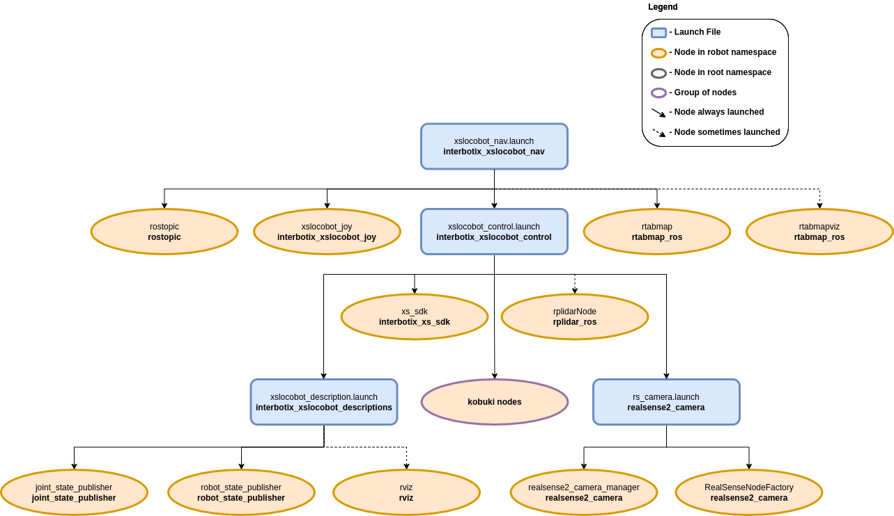
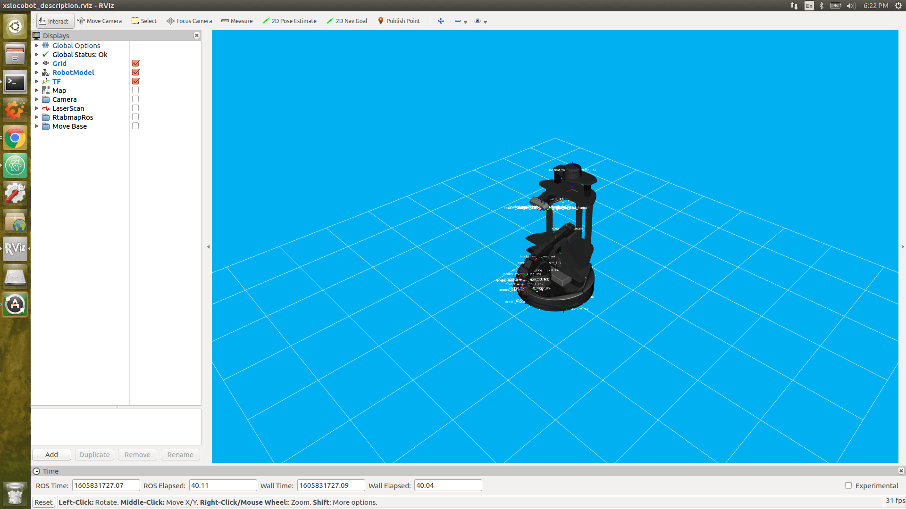
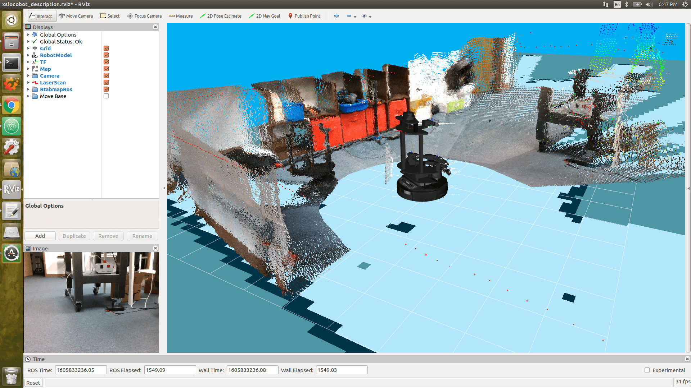
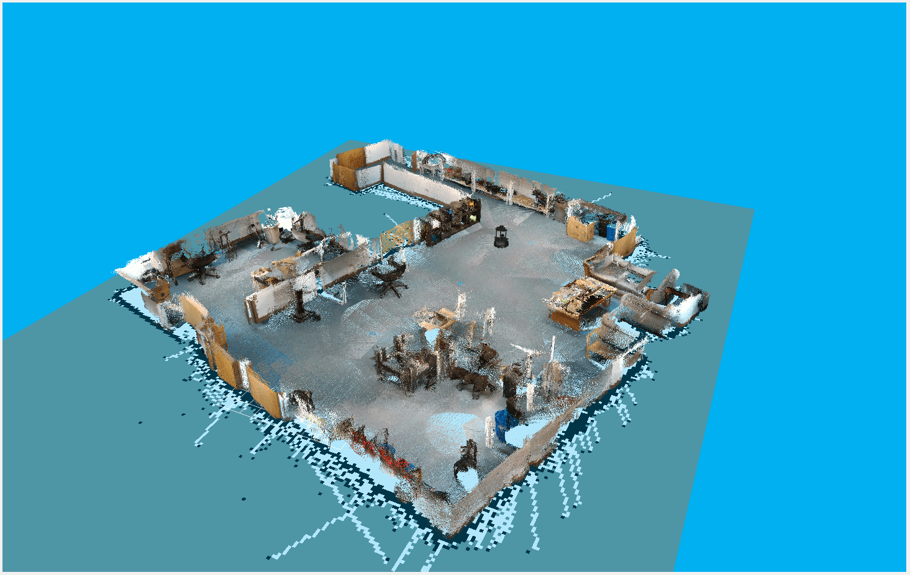
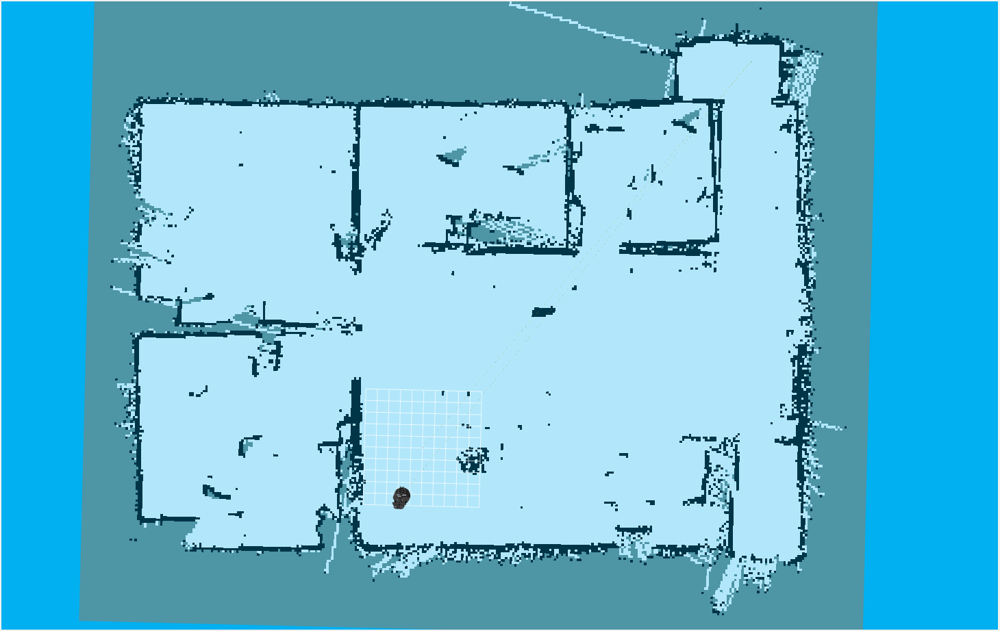
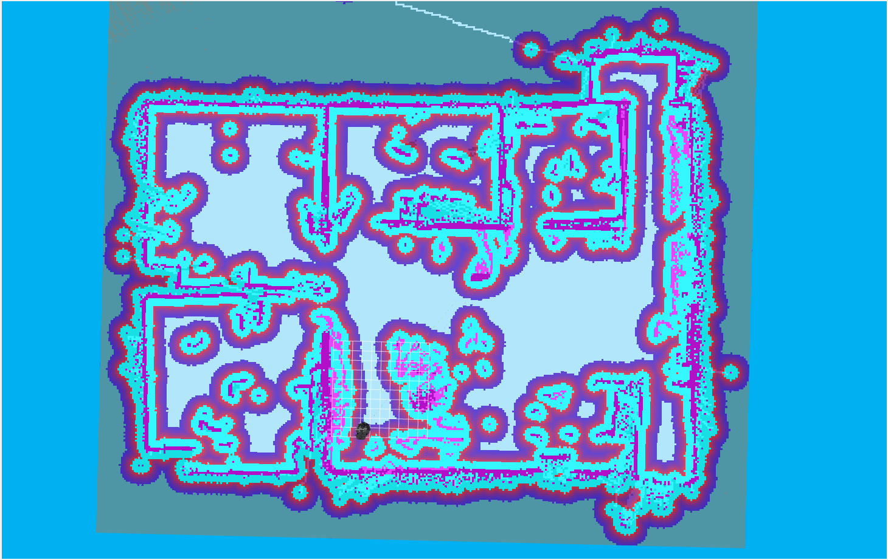
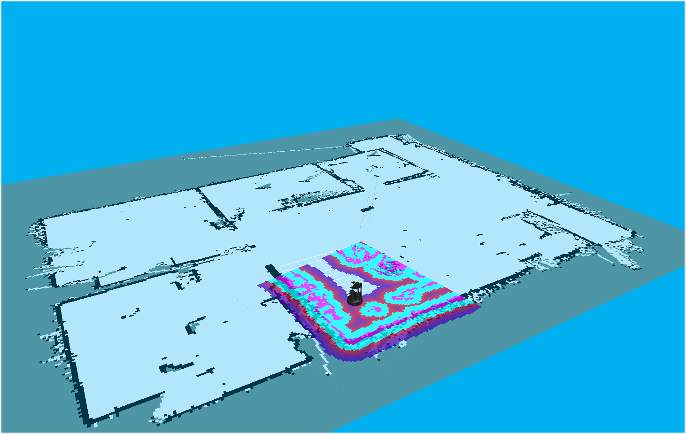
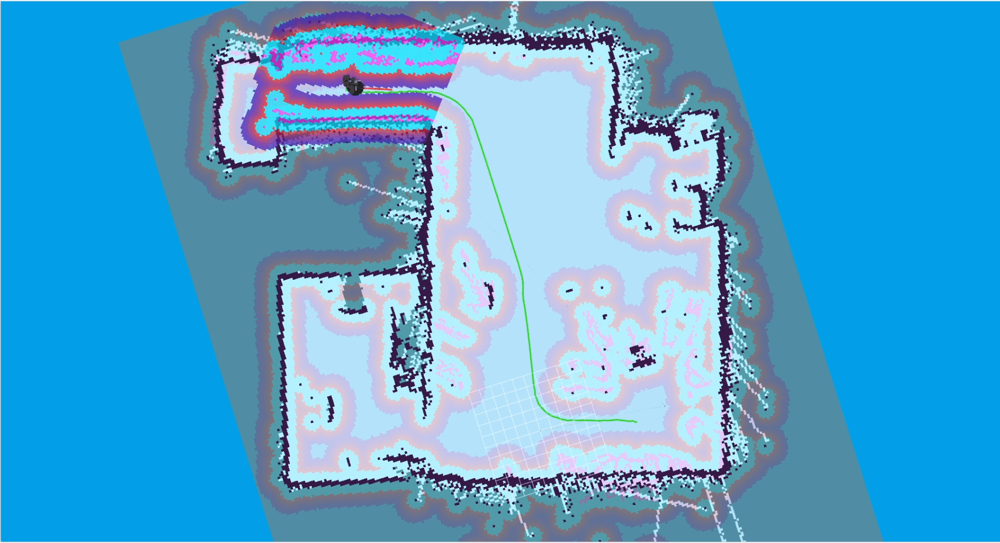

Navigation Stack Configuration
 View Package on GitHub
View Package on GitHub
Overview
This package configures the ROS Navigation Stack needed to give any X-Series Interbotix LoCoBot platform the ability to perform simultaneous localization and mapping (SLAM), navigation, or just localization. It can be used with just the Intel RealSense D435 camera or with both the camera and the A2M8 RPLidar laser scanner. The localization and mapping part is done using the rtabmap_ros ROS package while the navigation part is accomplished via the move_base ROS package.
Note
For best results, this package should be run with the robot in an indoor, uncluttered environment that does not contain too much sunlight and has minimal reflective surfaces.
Structure
As shown above, this package builds on top of the interbotix_xslocobot_control package (which starts the xs_sdk node), and is used in conjunction with the rtabmap_ros and move_base ROS packages. A short description of the nodes needed from those packages can be found below:
- rostopic - used to publish the desired tilt angle for the RealSense camera at startup
- rtabmapviz - Rtabmap's Visualization tool when doing mapping or localization; not really necessary to use since Rtabmap has RViz plugins that work pretty well
- move_base - responsible for planning paths for the robot and sending Twist commands to the Kobuki base to follow them
- rtabmap - responsible for performing SLAM or just localization
Note that there are also a few Rtabmap nodelets that are started up under the realsense2_camera_manager for processing purposes. Descriptions of them are below:
- rtabmap_ros/rgbd_sync - synchronizes color and depth images from the Realsense camera, and outputs an RGBD image; this is used by the nodelet below and the main rtabmap node to do SLAM or localization
- rtabmap_ros/point_cloud_xyzrgb - takes in RGBD images, decimates them (to reduce noise and processing requirements), and outputs PointCloud2 messages to the nodelet below
- rtabmap_ros/obstacles_detection - takes in PointCloud2 messages and filters out the ground;
then it outputs the resulting PointCloud2 to
depth/color/obstacles. This is in turn used by move_base to avoid obstacles
Usage
There are three ways this package can be used:
Note
The commands below assume the user has a LoCoBot WidowX 200 robot with the lidar add-on.
However, any X-Series LoCoBot will work. If no lidar is being used, make sure the use_lidar
argument is set to false.
SLAM From Scratch
To get SLAM up and running from scratch, type the following in a terminal on the robot computer:
$ roslaunch interbotix_xslocobot_nav xslocobot_nav.launch robot_model:=locobot_wx200 use_lidar:=true rtabmap_args:=-d
In the above command, the argument rtabmap_args:=-d is provided. This will delete the current
database (by default - stored at ~/.ros/rtabmap.db) and create a new one. The database stores
map cloud and graph data (see the ROS Wiki for info on these concepts) which it then uses at run
time to create a 2D map that move_base can use.
Once the Nav Stack is running, you should see info messages appearing in the terminal once a second saying something similar to...
rtabmap (3): Rate=1.00s, Limit=0.000s, RTAB-Map=0.0697s, Maps update=0.0099s pub=0.0000s (local map=1, WM=1)
Now, to visualize the robot in RViz, run the following on your remote Linux computer (note that you should first run the remote installation script on your personal computer if you haven't done so already).
$ roslaunch interbotix_xslocobot_descriptions remote_view.launch rviz_frame:=map
RViz should now open up looking like the picture below:
To visualize the map being created, click the checkbox by the Map display. To see a live color feed as well as filtered point cloud data from the RealSense camera, click the Camera display. The move_base package uses this filtered point cloud data to detect obstacles in the robot's path. It is filtered to reduce bandwidth and to segment out the floor so that the robot doesn't think the 'floor is lava' so-to-speak. On the other hand, rtabmap_ros uses both the live feed and an aligned depth feed (not displayed) to perform mapping and localization. Next, click the LaserScan display to show a 360 degree view of where it thinks there are obstacles. This is used both by move_base for obstacle detection and rtabmap_ros for mapping and localization refinement. Moving on, the RtabmapRos display can be used to show a point-cloud representation of the robot's environment built in real-time as the robot moves. See the picture below for a visualization of all these displays in RViz.
At this point, you're ready to start moving the robot. There are three ways to do this. One is to
use the 2D Nav Goal button at the the top of the RViz screen to set a goal pose within the
map's free space. This sends a command to move_base to plan out and execute a path to the goal. A
second way is to run the xslocobot_joy.launch file found in the interbotix_xslocobot_joy ROS
package (either on the robot or on your remote computer). To do this, type...
$ roslaunch interbotix_xslocobot_joy xslocobot_joy.launch robot_model:=locobot_wx200 launch_driver:=false
Setting the launch_driver argument to false tells the launch file not to startup the
locobot driver nodes as the robot is already running. Finally, a third way to move the robot is to
run the Kobuki keyop node. This will then allow you to use your keyboard arrow keys to move the
robot. To do this, type the following either on the robot or remote computer...
$ roslaunch kobuki_keyop keyop.launch __ns:=locobot
Note the two underscores before the ns launch file tag. Also note that only one of these
control modes should be used at a time; otherwise, the base might not move correctly (as it's being
bombarded with different velocity commands from multiple packages simultaneously).
We recommend using a PS4 controller when doing mapping or SLAM since that gives you full control on the robot's motion and is more intuitive to use than the keyboard. Some other tips to get a clean point cloud map are:
- Rotate the robot full circle slowly to get as many features as possible so that the algorithm has a higher chance of getting loop closures
- After rotating in a single spot, slowly translate over to another spot, and do another full circle. Repeat this and the above step multiple times until you've mapped your desired area
- In the RtabmapROS RViz display, open up the MapCloud display, and raise the
Cloud decimationlevel to 6 or 8 (default is 4). This will filter out more of the raw point cloud data, reducing noise - Also in the RtabmapROS RViz display, open the MapCloud display, and lower the
Cloud max depthlevel to 2 (default is 4). This will only stitch point cloud data up to 2 meters away from the robot together. As depth readings tends to degrade the further away they are from the sensor, this will also filter out noisy data. - Try not to map out areas that are already mapped out more than once to reduce noise; also this will keep the size of the resulting database smaller; these files can be rather large (a few hundred Megabytes)
- For optimal loop closure detection, it's a good idea that the depth camera be tilted to the same angle that it will be tilted at when just doing localization; during localization, it's a good idea to have the camera tilted down slightly so that small obstacles that can't be seen by the laser scanner can be picked up.
After mapping, you should have a MapCloud similar in structure to the one below. If that's the case, type Ctrl + C in the robot's terminal to stop the launch file. Then close out RViz on your remote computer as well.
Continuing SLAM From a Pre-Built Map
To continue doing SLAM, type the following in a terminal on the robot computer:
$ roslaunch interbotix_xslocobot_nav xslocobot_nav.launch robot_model:=locobot_wx200 use_lidar:=true rtabmap_args:='--Rtabmap/StartNewMapOnLoopClosure true'
Setting the Rtabmap/StartNewMapOnLoopClosure parameter to true tells Rtabmap to wait on
starting a new map until it detects a loop closure with the old map. If you'd rather have Rtabmap
start creating a new map right away before finding loop closures (perhaps you're mapping a
different part of your office that's not next to the first part), then set the parameter to
false (which it should be by default).
As far as visualizing the robot in RViz and controlling it are concerned, just look at the tips in the SLAM From Scratch section above.
Localization
Once you've finished mapping your desired environment, the next step is to have the robot uses its sensors to just localize itself within the map while navigating. To do so, type the following in a terminal on the robot computer:
$ roslaunch interbotix_xslocobot_nav xslocobot_nav.launch robot_model:=locobot_wx200 use_lidar:=true localization:=true
Next, open up RViz on your remote computer as outlined in the SLAM From Scratch section, and visualize the Map display. You should see something similar in structure to the picture below (of course your office layout will be different).
Now check the Move Base RViz display. This should display both the global and local costmaps. In general, a costmap associates obstacles with high cost values (100), areas near obstacles with slightly lower values (from 1 - 99), and free space as 0. These costmaps are then used to do path planning where the main objective is to find a path with the minimum cost. Check the ROS Wiki costmap_2d page for a more detailed description. For the map above (generated from Rtabmap), the global costmap looks like...
As can be seen, it's pretty colorful! Each color is associated with a cost. The color that lines up with the black part in the original map represents true obstacles and signifies the highest cost (the light purple color surrounded by cyan in this case). As you move outward from the true obstacle, each color signifies a slightly lower cost.
In this case, the global costmap is made up of three layers. The first one is the static map layer which is essentially the map created by Rtabmap. The second one is the Obstacle layer. Any obstacles picked up by the robot's sensors not seen in the original static map are added in this layer. The final one is the Inflation layer. As its name suggests, all obstacles are inflated a bit to prevent the robot from navigating too close to obstacles.
The local costmap on the other hand is made up of two layers and is a lot smaller (a 4 meter square area centered around the robot). It just contains the Obstacle layer and the inflation layer. A picture of it can be seen below.
Besides for the Costmap sub-displays in the Move Base group, there are also the Global and Local Plan displays. Whenever a 2D Nav Goal is set in RViz, a global path (in green) is displayed linking the goal state with the start state. This path is the overall path the robot will try to follow. Similarly, a local plan (in red) is also displayed that starts from the robot's footprint and goes for about a meter. The local plan attempts to follow the global path but will take detours if obstacles get in the way.
When starting in localization mode, Rtabmap will try to localize the robot using its last known position (from a previous session) as a reference point. Most of the time, it's able to figure out where the robot is. Sometimes however, especially if the room is not feature-rich, Rtabmap will localize the robot incorrectly. If that's the case, just use the 2D Pose Estimate tool at the top of the RViz window to let Rtabmap know where the robot actually is.
This is the bare minimum needed to get up and running. Take a look at the table below to see how to further customize with other launch file arguments.
| Argument | Description | Default Value |
|---|---|---|
| robot_model | model type of the Interbotix LoCoBot such as 'locobot_base' or 'locobot_wx250s' | "" |
| robot_name | name of the robot (could be anything but defaults to 'locobot') | "locobot" |
| use_lidar | if true, the RPLidar node is launched | false |
| show_lidar | set to true if the lidar is installed on the robot; this will load the lidar related links to the 'robot_description' parameter | $(arg use_lidar) |
| use_rviz | launches RViz | false |
| localization | if true, Rtabmap opens in localization only mode; if false, Rtabmap open in SLAM mode | false |
| rtabmap_args | arguments that should be passed to the rtabmap node; note that these arguments are in addition to the arguments already specified in the rtabmap_default_args argument in the xslocobot_nav.launch file | "" |
| use_rtabmapviz | whether or not to use Rtabmap's Visualization tool; it's not really necessary as Rtabmap already has RViz display plugins | false |
| rtabmapviz_args | arguments to pass to the Rtabmapviz visualization node | "" |
| database_path | location where all the mapping data Rtabmap collects should be stored | "~/.ros/rtabmap.db" |
| camera_tilt_angle | desired angle [rad] that the D435 camera should be tilted when doing SLAM or localization | 0.2618 |
| launch_driver | true if the xslocobot_control.launch file should be launched - set to false if you would like to run your own version of this file separately | true |
Simulation
To simulate the Navigation Stack in Gazebo, the helper launch file, xslocobot_nav_sim.launch
has been provided. To use it, enter the command below, along with any of the other args mentioned
above that would be relevant to your application. Once Gazebo loads, unpause the physics, and start
your navigation and mapping application.
$ roslaunch interbotix_xslocobot_nav xslocobot_nav_sim.launch robot_model:=locobot_wx200 dof:=5 use_lidar:=true
Note
The dof command must be specified in order to load the proper position controllers.
Troubleshooting
Time out waiting for transform...
When starting the Nav Stack (either when continuing a map or just doing localization) on your robot, you may see some warnings appear in the terminal. For example...
Timed out waiting for transform from locobot_wx200/base_footprint to map to become available before running costmap, tf error: canTransform: target_frame map does not exist.. canTransform returned after 0.100567 timeout was 0.1
The reason this appears is because no map is being supplied to the navigation stack. The reason for that is because it takes Rtabmap a few seconds to generate the map from its database (which could be hundreds of megabytes). As such, this warning can be safely ignored assuming it stops once Rtabmap gets the map out.
Rejected Loop Closure
When starting the Nav stack or during mapping, you may see the following warning appear (or similar) in the terminal...
Rtabmap.cpp:2533::process() Rejected loop closure 694 -> 773: Not enough inliers 0/20 (matches=0) between 694 and 772
Similar to the first warning, this can be ignored if it only shows up a few times at node startup. It just means that Rtabmap has failed to determine where the robot is in the map. If you're mapping too quickly, this warning can also appear, so slow down a bit.